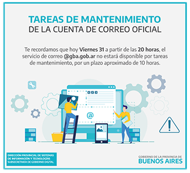
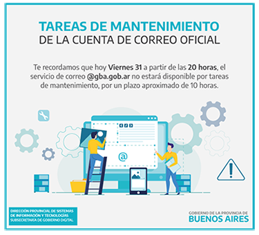

Experiencia Laboral
| Empresa | Trabajo | Año |
|---|---|---|
| Diseño Freelance | Diseño Gráfico | Enero 2016 - Actualidad |
| DPSIT | Diseño Gráfico | 4 años (2016 - 2020) |
| U-link | Diseño Web | 2 Años (2019 - 2021 ) |
| Design Pickle | Diseño Gráfico | Enero 2021 - Actualidad |
Una vez que me recibí comencé mis pasos como diseñadora realizando trabajos freelance para diferentes empresas y emprendimientos, recomendada por familiares y amigos. De esta forma de a poco fui ganando experiencia en lo que hacía.
Partiendo desde cero como un equipo de trabajo y con el objetivo principal de poder crear y canalizar un medio de Comunicación que sea eficaz entre todos, comenzamos redactando y diseñando comunicaciones informales vía mail.
Placas realizadas:
- Informativas.
- Cumpleaños.
- Bienvenida a los nuevos ingresantes.
- Efemérides.
- Invitación a cursos.
 

En el año 2017, a medida que fuimos avanzando y nos fuimos consolidando, la demanda de piezas se fue incrementando y expandiendo dada la respuesta positiva que recibimos de compañeros y del personal Jerárquico. Internamente los departamentos comenzaron a solicitarnos flyers explicativos de sistemas, manuales de usuario, presentaciones y documentación técnica. Sumamos también placas de recibidas, nacimientos y despedidas de compañeros.
Externamente realizamos un trabajo en conjunto con la Subsecretaría para la Modernización del Estado, para la realización del 1º FORO PARA LA MODERNIZACIÓN DEL ESTADO.
Para este evento elaboramos las presentaciones, invitaciones, credenciales, hojas membrete y programa, y el diseño de la página web.
En el año 2018, realizamos un Plan comunicacional para organizar y realizar de forma ordenada todos los pedidos que recibimos. Rediseñamos las placas de base que utilizamos para las comunicaciones internas, generando un sistema entre todas las piezas.
Participamos en la organización y ejecución del 2° Foro para la Modernización del Estado:
- Realizamos 6 presentaciones.
- Diseñamos las invitaciones y gestionamos el envío a más de 60 personas.
- Obtuvimos más de 170 registros fotográficos del evento.
- Elaboramos la encuesta post evento y las enviamos a más de 100 participantes.
- Procesamos la información y realizamos el informe con los resultados.
Todo comenzó cuando cansada de permanecer estática en un trabajo dónde no veía crecimiento, me decidí ir a una charla que daba Globant en sus oficinas de Buenos Aires sobre una beca para estudiar Programación, área sobre la cual me encontraba y encuentro profundamente interesada. Ahí fue donde conocí a Michelle Wiesner. Luego de la charla descubrimos que los dos vivíamos en La Plata por lo que volvimos hablando en el micro. Ahí fue donde me contó que estaba en una empresa que recién comenzaba, dónde se trabajaba de manera remota y Part Time, cosa que me venía perfecta dado a mi miedo de dejar un trabajo seguro y estable. Me contó que necesitaban una diseñadora para la aplicación que estaban desarrollando llamada “U-LINK”, la cual tiene el objetivo de ayudar a las personas en su proceso de asilo político en EEUU. Pasé la entrevista y comenzamos a trabajar en el proceso y el diseño de la aplicación desde cero. Surgieron algunas propuestas de cómo podría verse la identidad y luego comenzó el proceso del maquetado web por mi parte y la implementación en Angular por parte de Michelle.
Fue un camino difícil ya que es una aplicación compleja. El proceso de asilo político consta de muchos pasos y cuestionarios que son importantes para que el caso del usuario sea tenido en cuenta ante el oficial de migración. Luego de muchas pruebas y errores en cuanto a usabilidad, pudimos encontrarle el camino, terminando este proceso en el cual esperamos poder ayudar a muchas personas que se encuentran en situaciones vulnerables en su país. El hecho de poder ayudar a otras personas, fue lo primero que me atrajo de este proyecto.
Como soy inquieta y activa en lo que respecta al diseño, como desafío personal me dedique a generar una estrategia de comunicación interna basada en lo que considero es el clima ideal para un ambiente de trabajo. La comunicación interna permite fortalecer los lazos y promover el trabajo en equipo, la construcción de un sentido de pertenencia dentro de la empresa genera un compromiso y responsabilidad en la labor cotidiana.
Actualmente me encuentro trabajando en esta empresa extranjera que ofrece serviciso de diseño a usuarios, empresas y pequeñas pymes de todo el mundo. Es un gran desafío para mí trabajar y tener contacto directo con el cliente en otro idioma. Algo de lo que sigo aprendiendo todos los días y que creo que me ayuda como diseñadora enternder y comprender otras culturas y sus pedidos de diseño, me parece totalmente enriquecedor.